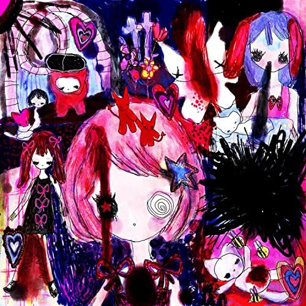

Ómerta is a nu-metal band hailing from Texas. While technically formed in the early 2000s, fans consider the release of the Hyperviolence EP in 2020 to be the beginning of the Omerta we know and love today. While they only currently have 14 released songs, a double length LP is on the way, set to more than double their discography in early 2025.
This band remains one of my favorite largely due to their unique style and sound. They manage to put emotions and experiences into words like no other band in the scene. Their unique focus on trauma as a concept rather than personal experience leads to a band where any listener can find themselves in the music if they look hard enough. While their debut EP feature very violent lyrics due to it's focus on emotions like anger and frustration, it's a beautiful kind of violence that is more about expressing emotion than spreading hate.
Before I begin discussing Omerta's discography, I would like to issue a general content warning, as most of their songs deal with trauma or mental illness, with references to events that are often a result of these factors, like self-harm or suicide.
Album art for single "Antiamorous". Hyperviolence omitted due to artistic nudity.
Early History (2000s -> Hyperviolence)
Ómerta began as a hardcore band formed by members Gustavo and Han, who are still members to this day. In the early days, the band didn't find much success due to the oversaturation of the space they were in. They released one EP titled "Captial Punishment" through Bandcamp, which is widely regarded to be an entirely seperate project from current day Omerta. In late 2019, Vincent E. Void took over as Omerta's creative director, and the band has stated that his involvement is largely responsible for the pivot towards more a experimental sound they took in Hyperviolence.
VOLUME WARNING - Early Live Show
Current History (Antiamorous, Charade, and Beyond)
In late 2020, following the release of Hyperviolence, a two song EP was announced under the name of Suicycle. However, the day of the release (October of 2020), the EP didn't come. While at the time the band claimed this was due to streaming services accidentally flagging the artwork as "offensive/inappropriate", we now know that this is a result of a lawsuit with the label HYDE that they were under NDA for. As the lawsuit hasn't fully materialized, the details are still unclear. However, the band pivoted, dropping the "Suicycle" name and annoucing that the project was becoming a full-length LP under a unnannouced name, releasing in late 2023. The lawsuit has further pushed this back to early 2025, with the length of the album increasing as well.
Two singles have released since the annoucement of the full-length, Anti-amorous (2023) and Charade (2024) respectively. Anti-amorous follows the albums concept of trauma by personifying a panic attack as the singer's lover, while Charade is a track originally unplanned for the album about the lawsuit that the band has been dealing with, as HYDE violated their side of the NDA making the band able to finally comment on the events.
Interestingly enough, neither of these songs are the originally announced tracks for the EP. Those songs were Wrongspeak and Traumacoaster, and while Traumacoaster is the next planned release, Wrongspeak has been scrapped.
AGAIN, content warning for lyrics. Omerta speaks on very sensitive issues with a tone that can sound lacking in nuance to those unfamiliar with the band's concept, along with light profanity.
Omerta - AntiamorousOmerta - Traumacoaster (Live Performance)